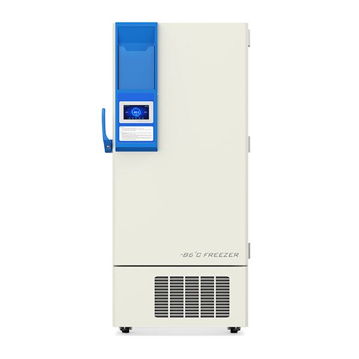

Meling Biomedical -80 °C Freezer

| Meling Biomedical DW-HL678HC -80°C Freezer | |
|---|---|
| Location: | Lab. 2.39 Building 8 |
| Manager: | Margarida RamiresRodrigo Borges |
| Operator: | User |
| Working Principle: | Freezing |
| Manufacturer: | Meling Biomedical |
| Model: | DW-HL678HC |
| Type: | -80°C Freezer |
| Website: | Meling Biomedical |
Meling Biomedical DW-HL678HC ultra-low temperature freezer, with a capacity of 678 L, designed for the long-term storage of biological samples, reagents, extracts, cultures, and other temperature-sensitive materials. The equipment operates within a temperature range of −40 °C to −86 °C, making it particularly suitable for laboratory and research applications requiring stable ultra-low temperature storage conditions.
The interior features four independent doors to minimize cold air loss when accessing samples, as well as three stainless-steel shelves. The equipment is equipped with microprocessor-based control and a touchscreen display, continuous temperature monitoring, an emergency battery, and a comprehensive alarm system for conditions such as temperature deviations, power failure, door opening, condenser overheating, and system malfunctions.
Main Applications
- Storage of biological samples;
- Conservation of reagents;
- Storage of extracts;
- Conservation of cultures;
- Storage of temperature-sensitive materials;
Technical Specifications:
| Specification | Value |
|---|---|
| Manufacturer | Meling Biomedical |
| Model | DW-HL678HC |
| Minimum Operating Temperature | −86 °C |
| Maximum Operating Temperature | −40 °C |
| Capacity | 678 L |
| Dimensions (L x W x H) | 105 cm x 105 cm x 195 cm |
| Number of Shelves | 4 |